📸 Fotografii Istorice - Comunismul
O colecție de fotografii autentice din perioada comunistă.
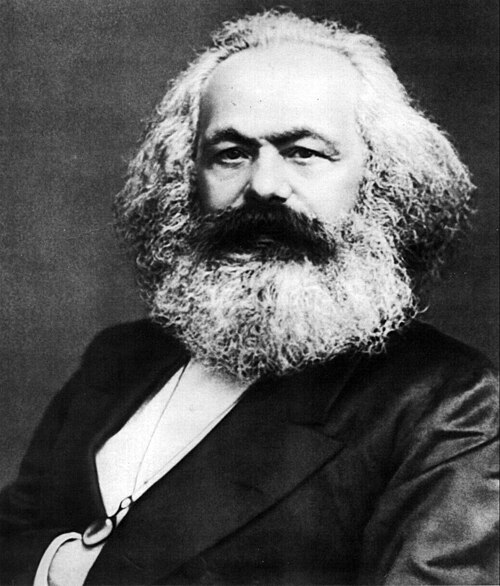
Karl Marx (1818-1883)
Fondatorul teoriei comuniste moderne. Filosoful german care a schimbat cursul istoriei.
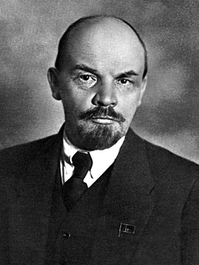
Vladimir Lenin - Liderul Revoluției (1870-1924)
Conducătorul Revoluției Bolșevice din 1917.
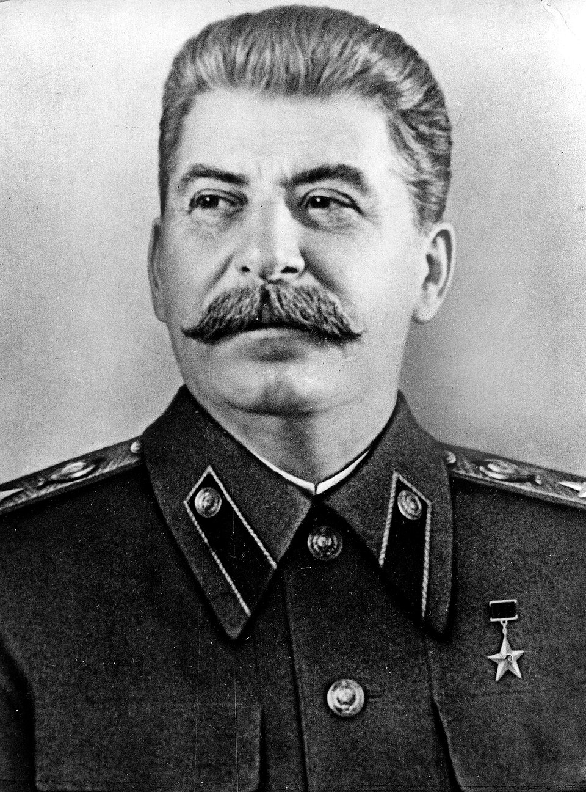
Joseph Stalin - Liderul URSS (1878-1953)
Liderul Uniunii Sovietice timp de 30 de ani.
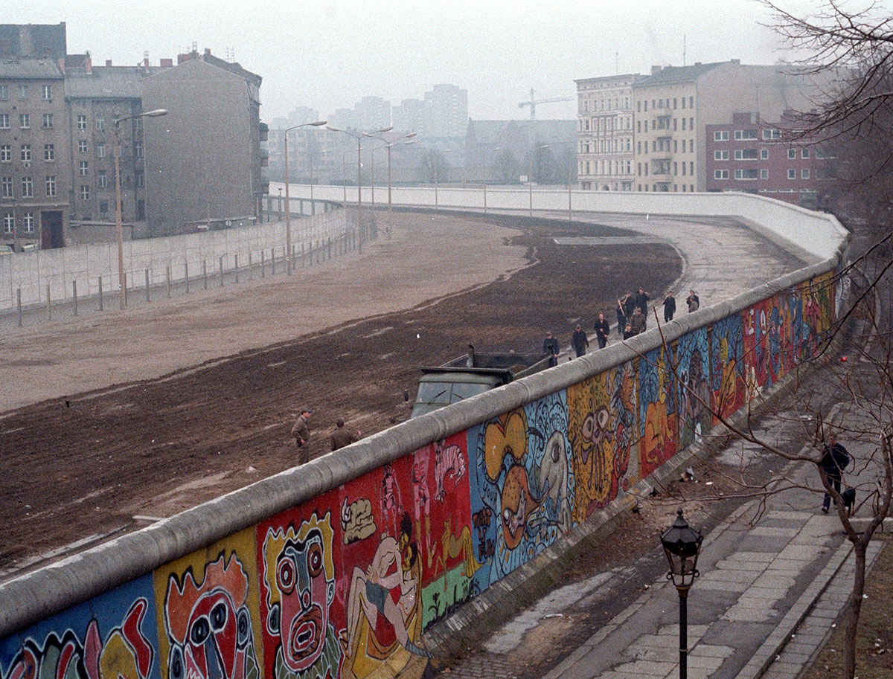
Zidul Berlinului - Simbol al Diviziunii
Construit în 1961, a despărțit orașul în două timp de 28 de ani.
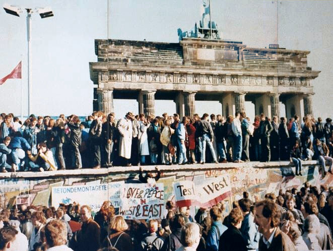
Căderea Zidului Berlinului (9 noiembrie 1989)
Unul dintre cele mai importante momente din istoria modernă.

Parada Militară Sovietică - Piața Roșie
Demonstrații militare spectaculoase ale puterii sovietice.
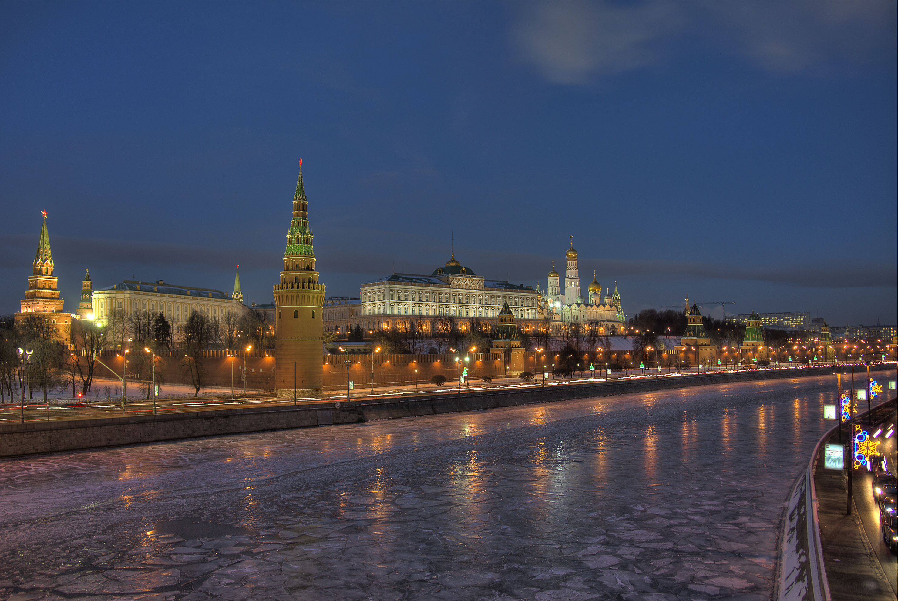
Kremlin - Moscova (Sediul Puterii Sovietice)
Kremlin-ul din Moscova a fost centrul administrativ și politic al URSS.
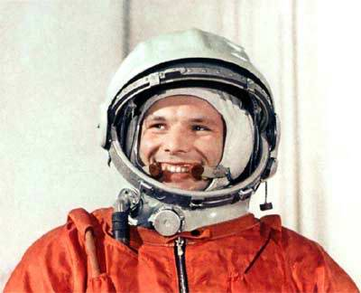
Yuri Gagarin - Primul Om în Spațiu (1961)
Cosmonautul sovietic care a fost primul om care a ajuns în spațiu.

Satelitul Sputnik (1957)
Primul satelit artificial lansat pe orbită.
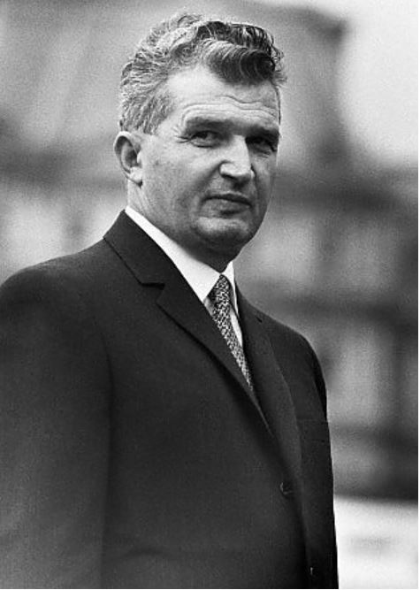
Nicolae Ceaușescu - Comunismul Român (1918-1989)
Liderul Comunist al României timp de 24 de ani.
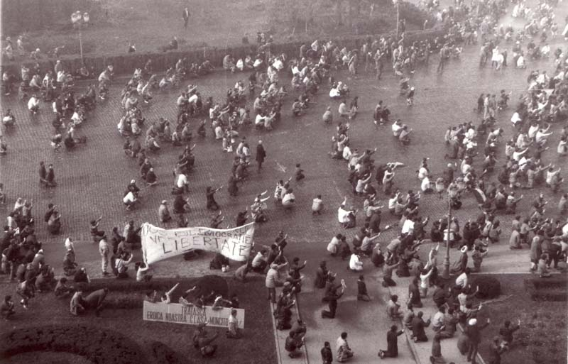
Revoluția Română (Decembrie 1989)
Revoluția care a dus la căderea regimului comunist din România.
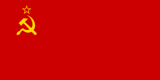
Steagul Sovietic - Simbol al URSS
Steagul roșu cu ciocan și seceră a fost simbolul oficial al URSS.
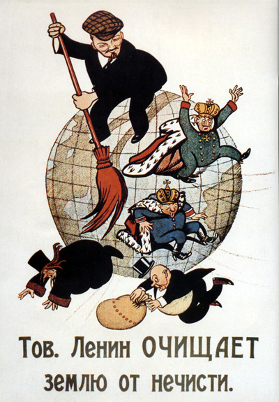
Propaganda Comunistă Sovietică
Postere propagandistice din URSS care promovau ideologia comunistă.
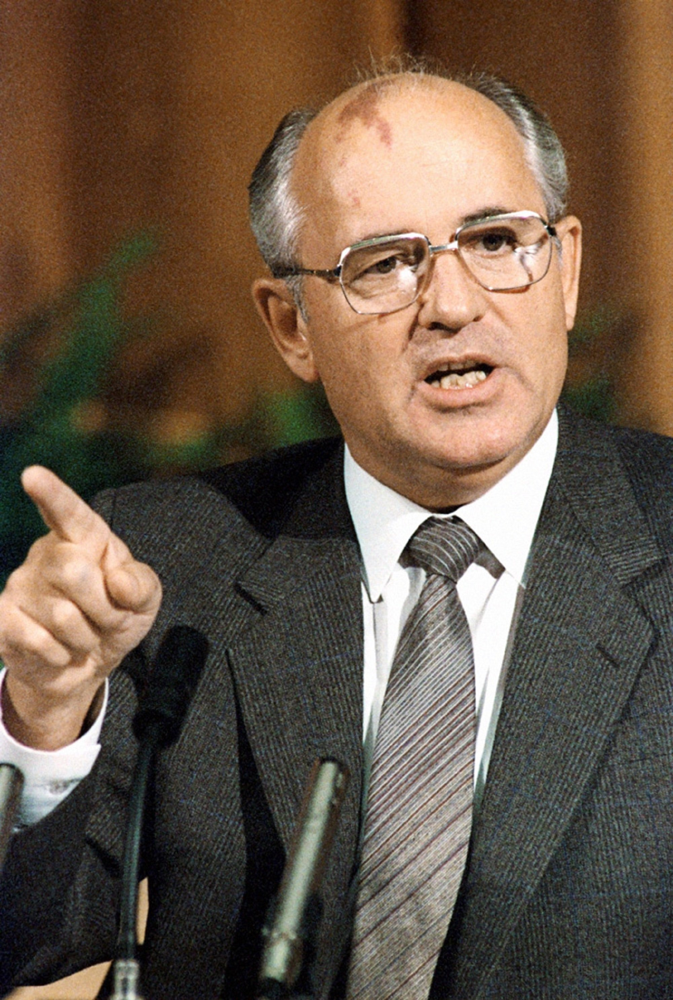
Mikhail Gorbachev - Reformatorul (1931-2022)
Ultimul lider al Uniunii Sovietice.

Mao Zedong - Comunismul Chinez
Liderul Republicii Populare Chineze și fondatorul comunismului chinez.
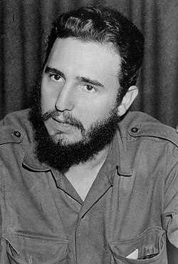
Fidel Castro - Comunismul Cuban
Liderul Revoluției Cubane din 1959.